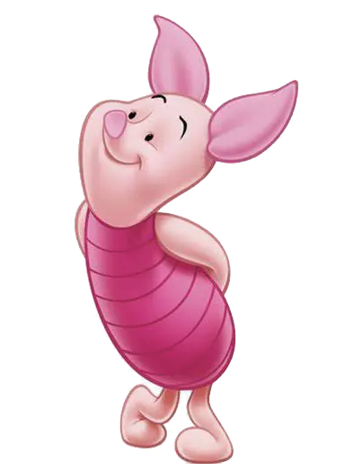
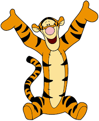
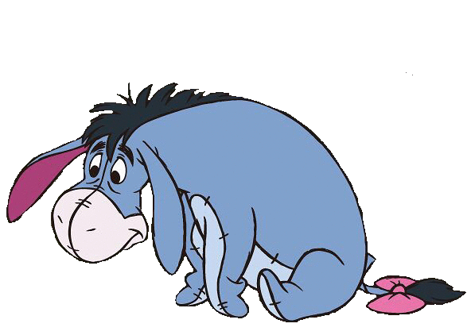
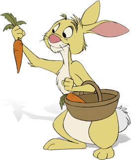
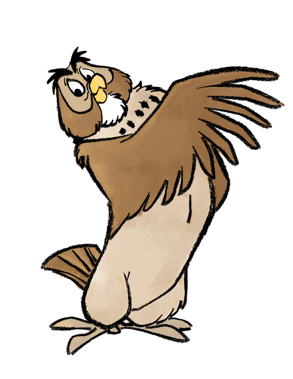
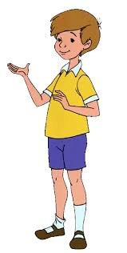

ピグレット

小さくて少し心配性だけれど、とてもやさしい友達です。 勇気を出して仲間のために行動するところが魅力です。
「すごく小さい動物にとっては、勇敢になるのはすごく大変なんだ。」
のんびり屋のプーさんと、森で一緒に過ごす友達たち。 それぞれの性格や魅力を、やさしい雰囲気でまとめました。

プーさんは、はちみつが大好きで、ゆっくり考えながら毎日を楽しむくまのぬいぐるみです。 難しいことよりも、友達と一緒にいる時間や小さな幸せを大切にしています。

小さくて少し心配性だけれど、とてもやさしい友達です。 勇気を出して仲間のために行動するところが魅力です。

元気いっぱいで、楽しいことが大好きな友達です。 まわりまで明るくするような、弾むような性格です。

落ち着いた雰囲気で、少しさびしがり屋な友達です。 みんなに見守られながら、森で静かに過ごしています。

しっかり者で、計画を立てたり畑の世話をしたりするのが得意です。 仲間をまとめる頼れる存在です。

物知りで、みんなに助言をしてくれる友達です。 森の中では相談相手のような存在です。

プーさんたちの大切な友達です。 みんなと遊び、話を聞き、森での時間を一緒に楽しみます。